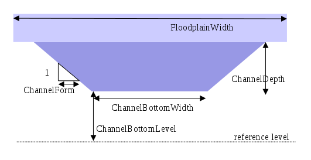

dynamicwave
Dynamic Wave equation
ResultQ = dynamicwaveq(Ldd, Qin, Hin,
ChannelBottomLevel, ChannelRoughness,
ChannelLength, ChannelBottomWidth,
ChannelDepth, ChannelForm,
FloodplainWidth,
TimeStepInSeconds, NrOfTimeSlices,
Structures, StructureA, StructureB, StructureCrestLevel)
ResultH = dynamicwaveh(Ldd, Qin, Hin,
ChannelBottomLevel, ChannelRoughness,
ChannelLength, ChannelBottomWidth,
ChannelDepth, ChannelForm,
FloodplainWidth,
TimeStepInSeconds, NrOfTimeSlices,
Structures, StructureA, StructureB, StructureCrestLevel)
ResultH,ResultQ = dynamicwaveq, dynamicwaveh(Ldd, Qin, Hin,
ChannelBottomLevel, ChannelRoughness,
ChannelLength, ChannelBottomWidth,
ChannelDepth, ChannelForm,
FloodplainWidth,
TimeStepInSeconds, NrOfTimeSlices,
Structures, StructureA, StructureB, StructureCrestLevel)
| Argument | Type | [Units] Remarks |
|---|---|---|
| Ldd | ldd, spatial | Channel network |
| Qin | scalar, spatial | [m3/timestep] lateral inflow into the channel |
| Hin | scalar, spatial | [m] >= 0, water surface level at begin of timestep |
| ChannelBottomLevel | scalar, spatial | [m] |
| ChannelRoughness | scalar, spatial |
|
| ChannelLength | scalar, spatial | [m] > 0 |
| ChannelBottomWidth | scalar, spatial | [m] >= 0 |
| ChannelDepth | scalar, spatial | [m] > 0 |
| ChannelForm | scalar, spatial | [-] >= 0 |
| FloodPlainWidth | scalar, spatial | [m] >= ChannelBottomWidth + ChannelDepth*ChannelForm |
| TimeStepInSeconds | scalar, non-spatial | [sec] > 0 |
| NrOfTimeSlices | scalar, non-spatial | [-] > 0 |
| Structures | boolean, spatial | [-] False/True values expected on defined Ldd cells |
| StructureA | scalar, spatial | [-] values expected where Structures is True |
| StructureB | scalar, spatial | [-] values expected where Structures is True |
| StructureCrestLevel | scalar, spatial | [-] values expected where Structures is True |
| ResultQ | scalar, spatial | [m3/timestep] Dynamic wave flow along the defined LDD |
| ResultH | scalar, spatial | [m] New water level Dynamic wave flow along the defined LDD. The next timestep, this resultH can be used as Hin. |
Definition of the channel arguments
Global options:
The algortithm is influenced by the options --manning (default) or --chezy, to select the dynamic flow equation (see below for these equations).
For an extended discussion of the Dynamic Wave equations is referred to textbooks on hydraulic modelling and hydrology (Chow and Chanson). The most important equation used is to calculate for each iteration step the dynamic flow as a function of water level and slope in water surface (Manning equation):
or, in case of the Chezy equation:
In which Aact is the wetted surface, calculated from the ChannelBottomWidth, ChannelForm and Hin (water level), R is the wet perimeter, calculated from ChannelBottomWidth, ChannelForm and Hin, and Sf is the slope in water surface, so the waterlevel upstream minus waterlevel downstream cell.
The volume of water in each cell is updated for the outflow of that cell and the inflow from above cells. Based on the new volume, a new water level H is calculated.
This set of equations is evaluated through the entire channel network, for iteration steps which are equal to TimeStepsInSeconds/NrOfTimeSlices.
The approach taken for structures is a generic approach, which defines outflow from or overflow over the structure using the formula
Boundary conditions for the dynamic wave should be modelled as fixed water levels. In the situation of a fixed water level, within the dynamic section the points with fixed water levels should overwrite the results of the water level before using them in the next timestep.
Example:
initial
FixedWaterLevel = Level.map;
FixedPoints = Points.map;
Hin = InitialWaterLevel;
dynamic
…
DynWaveQ, DynWaveH = dynamicwaveq,dynamicwaveh(LDD,Qin, Hin, ………);
Hin = if(FixedPoints then FixedWaterLevel else DynWaveH);
…